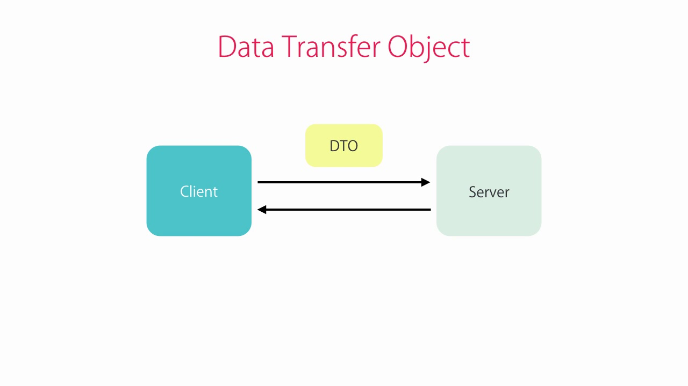

Este manual recoge el desarrollo de los ejercicios formativos del proyecto de software realizado en el marco del programa formativo dual. Cada ejercicio tiene su propia página con explicaciones técnicas, errores encontrados, soluciones aplicadas y capturas de código.
Este proyecto se ha desarrollado utilizando el patrón de diseño
**Modelo-Vista-Controlador (MVC)**, que permite separar las preocupaciones
entre la lógica de negocio, la interfaz de usuario y el control de flujo.
Además, se han utilizado **DTOs** (Objetos de Transferencia de Datos) para
facilitar la transferencia de información entre las distintas capas de la
aplicación, como para llenar los JComboBox con datos de la
base de datos.
Un DTO (Data Transfer Object) es un objeto que se utiliza para transportar datos entre diferentes partes de una aplicación, especialmente entre capas o sistemas distribuidos. Esencialmente, es una clase simple que agrupa un conjunto de datos relacionados, proporcionando una forma estructurada de transferir información sin lógica de negocio asociada.
